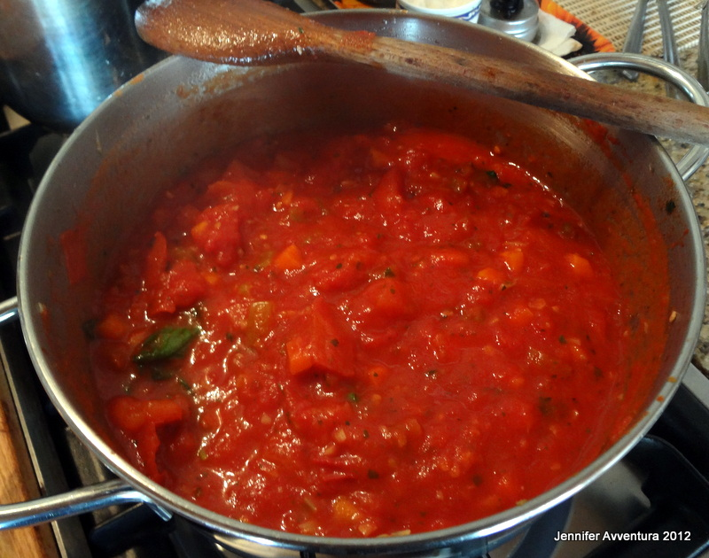

Step 1: Pass the tomatoes and their liquid through a food mill fitted with the fine disc. Heat 1/4 cup olive oil in a 4 to 5-quart pot over medium heat. Stir in the onions and cook, stirring, until wilted, about 4 minutes. Pour in the tomatoes, add the crushed red pepper, bay leaves and season lightly with salt and pepper. Bring to a boil, then lower the heat so the sauce is at a lively simmer. Cook, stirring occasionally, 30 minutes.
